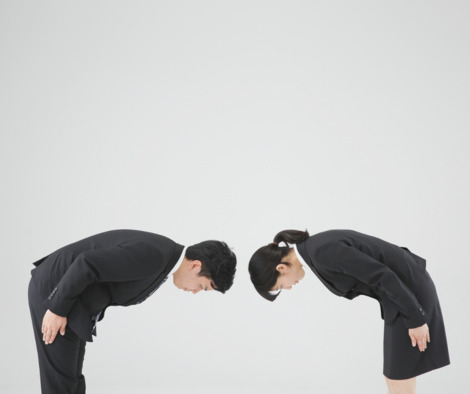
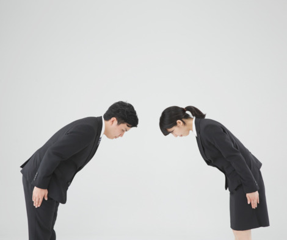
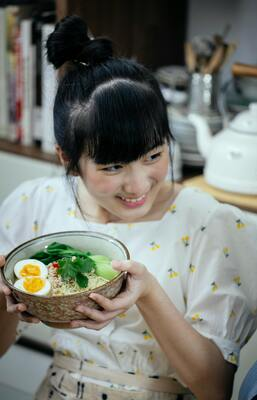
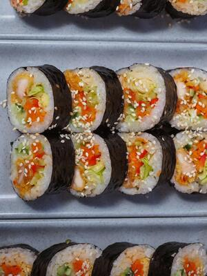

Saludo
Al saludar de forma adecuada a alguien en la cultura coreana formalmente es con una reverencia de 45°.°, el ángulo de inclinación de 90° es para mostrar respeto profundo. En el informal se hace con una inclinación ligera, especialmente entre amigos y conocidos


Comportamiento en la mesa
Al comer se debe respetar la jerarquía: no se empieza hasta que lo haga la persona mayor y lo mismo sucede al retirarse de la mesa. Para ofrecer o recibir alimentos se deben usar ambas manos. Sorber fideos es aceptable como muestra de disfrute, pero no en sopas u otros líquidos. Los palillos nunca deben clavarse en el arroz porque recuerda a los inciensos de un funeral

